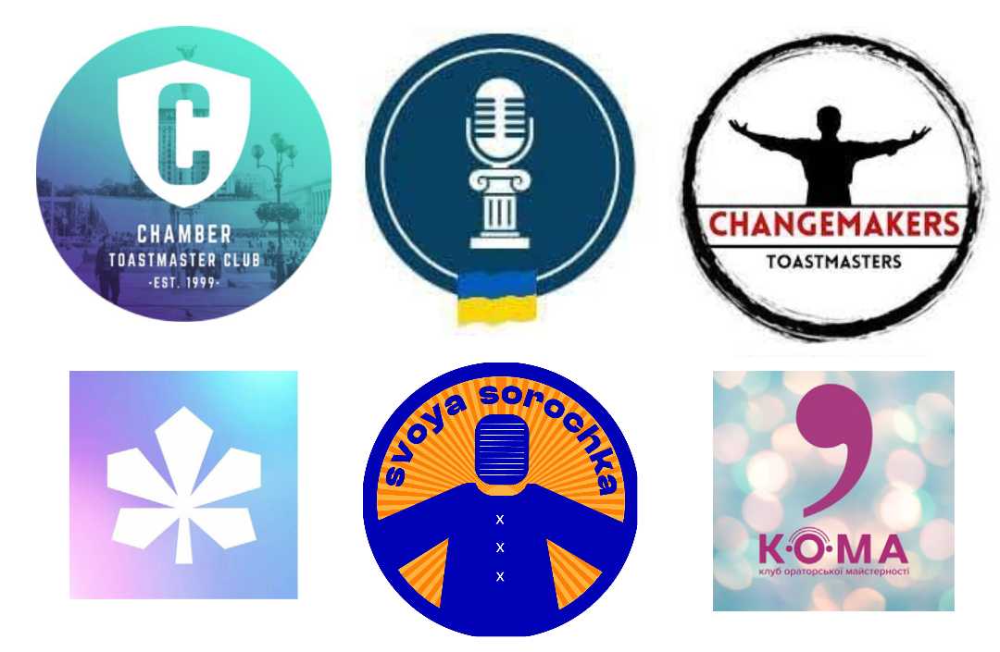
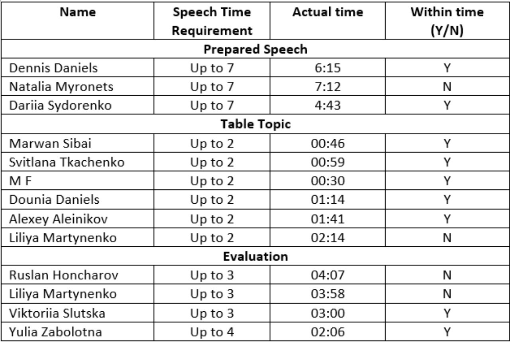
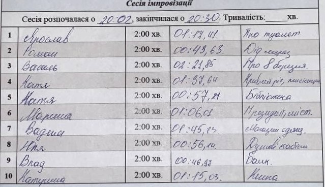
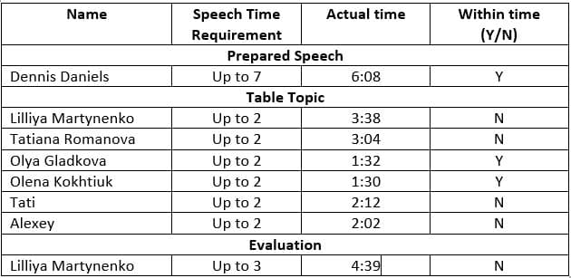
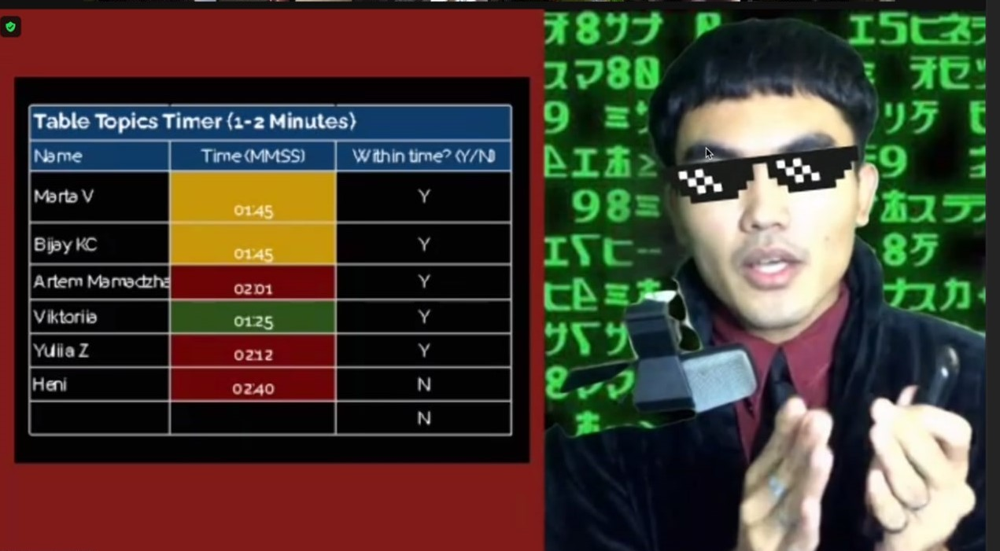
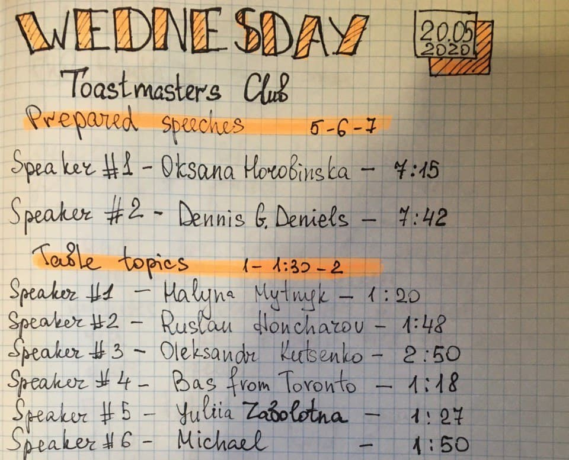
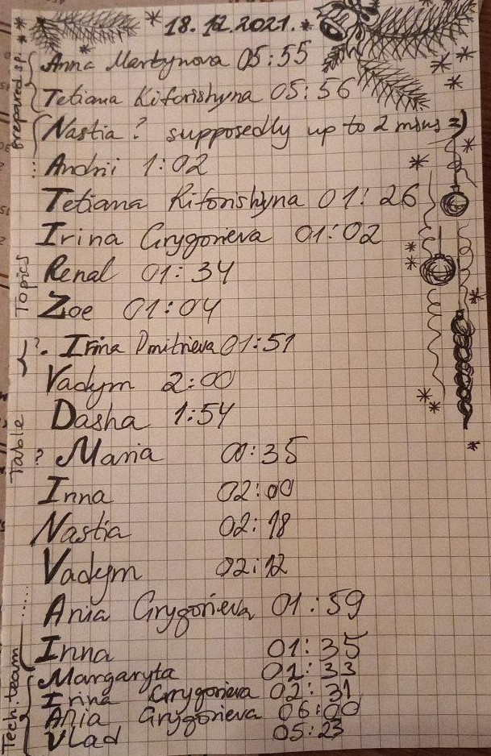
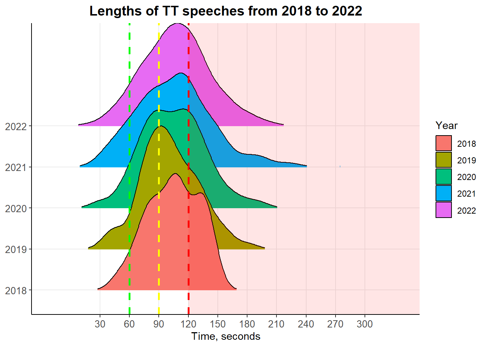

Introduction
“How I wish they just shut up.”
Whether you are on a date, work meeting or family gathering, you can’t help but sigh when someone takes too long to articulate their thought. You’ve already understood the main point of whatever that is that they are trying to say, but you wait, let them finish - we need to show respect. After a certain threshold you can hear teeth grinding, eyes rolling, feet shuffling, fingers fidgeting and omnipresent yawning. You don’t listen anymore, words fail to register flowing in and out of your head. All the while, the speaker (that someone) is oblivious to the damage he inflicts to others!
Now this is an extreme case of bad communication we have all been the victim and the perpetrator of. Good (effective) communication requires time to be taken into consideration. One doesn’t have to talk for too long nor too short, but enough. When is enough? How to know how much one has to speak to deliver the message effectively? Also, what does effectivenees mean in the context of communication? Effectiveness in the military, for example, is about short and clear exchanges: “Roger that!”, “Copy that!”, “Tango down”, “Enemy 12 o’clock” - its goal is to deliver information that can be acted upon immediately. For academics effective communication is about articulation hard science in such a way a 5 year old can understand. Depending on the context effectiveness means different things: getting away with a lie, convincing someone to partner up, getting a “yes”, accurately giving a portrait of a criminal to the police.
Coming back to the example above, there are many things that might make us think someone would just shut up. Being overtime is one of them. I once heard a speech that took too long, the speaker kept repeating the same things over and over again. Later, to my surprise, the speech was voted as the best by meeting attendees - turns out the story was relatable and majority liked it. Others were okay listening much longer, while I was sent to a different dimension by the speech. This situation got me thinking just how important is the time in communication?1
1 No doubt it is, but “can we quantify it?” is the main question of this research.
Measuring effectiveness of communication is not a straightforward task. In this article we study it via proxy with data from Toastmasters international, whose meetings have an impromptu session, where each participant has 2 minutes to give a speech. After the last participant has concluded everyone votes for the best speaker. Winning is a sign of effective (good) speech, as it has achieve at least one of the following:
was better than others;
communicated idea clearly;
was memorable or relatable;
happened (!)
The following research looks intothe data gathered during Toastmasters meetings and looks at how time of the speech is associated with speeches’ effectiveness (winning) and a slew of other interesting hypotheses.

Toastmasters in a Nutshell
For people who hear about Toastmasters for the first time. This is a place to practice your public speaking skills. Each meeting, which typically lasts for 90 minutes, has a structure:
Prepared speeches: usually 5-7 mins long given by Club members;
Table Topics (TT) session: 2 mins impromptu speeches (everyone can participate), one can volunteer to answer a question or will be chosen by a toastmaster;
Evaluation session: everyone who came on stage during previous sessions is given feedback on how well they did.
Toastmasters are more organized and formal compared to many speaking clubs. Many of its members are middle-aged with higher education. These people value their time and that is why among the evaluators there is a Timer (Ta-da!). Timer’s responsibility is to keep track of time and show colored signs to a speaker. Without going into much detail, green is an early warning, yellow - soon the time will be up, red - time is up, finish your speech. Timer also tracks the time of each speaker and presents Timer Report - sine qua non2 of this article.
2 A necessary condition without which something is not possible [from Latin]
Data
Like a famished mouse looking for breadcrumbs under the bakers table an author was open-sourcing these reports from Telegram, Facebook, some were written by author himself and other were transcribed from videos of the meetings.
Most of the data was collected from Ukrainian TMCs: Chamber3, Arttalkers, Changemakers, Dniprohills, KOMA (UA-speaking) and Svoya Sorochka (UA-speaking). There are some reports from Japanese and Polish TMCs, but we will not be focusing on them.
3 Special thanks goes to Chamber and their Timer reports, without them this project would’ve taken much-much longer.
Note on Timer reports
Timer tracks everyone’s time, as can be seen on the reports. Here we will be only looking at Table Topics (TT) session times. Reports usually have the following information useful for our analysis:
- Speaker Name
- Speech Time
- Club
- Date
- TT winner4
4 There are many reports that don’t include TT winner or times of some speakers. Some speaker volunteer two or more times, which complicates analysis.
I have looked at too much timer reports (see examples by clicking on each Tab). It is as boring as being a Timer - manual work, under-appreciated and no one really cares. However, I was delighted to come across some very fine reports - a bright spark in otherwise gloom sea of boringness. These people turned a mundane, just-get-it-over-with role and created something worthwhile - a memory. For a lurking, opportunistic Toastmasters anthropologist (author) that is for sure.
But by and large, reports are nothing special. Some people have created a nice Excel sheet to track the time, others write on piece of paper.
I sense that some of you keen readers might have a suspicion that the author is a little crazy - going through hundreds of reports himself! Yes, he is; and while you hold that thought, hear this: some timer went to the trouble of writing down time to milliseconds (!), yet another specimen had written a start time (to milliseconds of course) and end time and subtracted the two to get a total time. Aaaaaaaaaaaaaa! You think I’m crazy?
But without these crazy reports, I wouldn’t have went through with this article.
1

2

3

4

5

6

7

8

9

10

11

12

13

In total there 180 unique meetings in the dataset from 2000 till 2022. Some of the meetings were dropped due to NAs in at least one of the columns. Speaking of gender discrimination, there was none present in current dataset, as the number of men and women5 is almost equal.
The gender of the speaker was assigned post hoc, based on the reports/photos of the meeting, common sense and a little bit of prejudice :)
In cases where it was impossible to establish the gender of a speaker - the whole meeting is excluded.
| Gender | # of TT paticipants | Proportion, % |
|---|---|---|
| Female | 682 | 47.63 |
| Male | 700 | 48.88 |
| NA | 50 | 3.49 |
With regards to TT participants names there are a total of 312 unique names6.
In reports the same people were reported under slightly different names. For example: Alexey/Aleksey/Alex/Aleks/Oleksiy/Oleksey…. and their counterpart Cyrillic versions. To deal with this issue, I simply renamed these to Alex. Similar approach was with other names.
All Ukrainian names were translated to English.


And lastly we have Time of TT! How TT works:
You have 2 minutes to answer a question or speak on a topic. To stay within time limits, the timer will show a speaker green sign when there is 1 minute left, yellow when 30 seconds and red when time is up.
Ideally you want to have an opening-body-conclusion short speech, but this isn’t always possible. You can volunteer or be dragged on stage. The question may be familiar to you or something you haven;t even thought about. Experienced speakers don’t find it hard to answer unfamiliar questions even in their worst, while those new to public speaking might find it hard to speak on their feet. That is all to say, that many different things happen during TT sessions, and we can’t possibly calculate what does it take to win TT session. Yes, you can win TT session if you give the most memorable/funny/insightful/outrageous/least boring speech. At the end of TT we vote for “the best speech” - this is our dependent variable of interest.
Before we get to figuring out what it takes to win TT, given the information above how does the distribution of TT times look like? A, B, C or D?
Question

Answer

Surprising? How peculiarly these times fall into one of natures patterns. One can also notice that there is a fat? right-tail - outliers.
Analysis
In this part we are going to try and answer some of the hardest philosophical questions, most pertinent questions starting with…
Who likes to talk more, women or men?
Gender

Time ~ Gender
Regression results
===============================================================
Time tt_time
(1) (2)
---------------------------------------------------------------
Sex 2.372 -0.347
(2.071) (28.473)
tt_participant_sex_prop -15.199** -585.821***
(6.131) (84.311)
Observations 1,366 1,366
R2 0.005 0.038
Adjusted R2 0.003 0.037
---------------------------------------------------------------
Notes: ***Significant at the 1 percent level.
**Significant at the 5 percent level.
*Significant at the 10 percent level. Strangely enough, if the proportion of men in TT session increases - then TT session will be be sorter. Also, having more men speak during TT session is associated with lower TT times.
The answer? The difference is not significant! The distributions closely resemble each other. Women don’t speak longer than men!
No, women actually speak a little less than men. However we cannot say that women ACTUALLY talk less! In the current study we only observe time taken to speak, however within these 2 minutes on stage, they might talk more (on average) than me. There seem to be report that women communicate ideas differently and use more words like ah/uh/m-m-m/you know/so/like7.
7 Foreshadowing a future ah-counter perspective on winning TT?!
Do we speak longer online?
In person conversations/presentation have you deal with people - you see/hear/feel/smell them every second of your speech. There are so many signals communicated non-verbally that we don’t even notice them. During in person meetings when you take too long to finish people start fidgeting, yawning, looking away, and you know you don’t want to make them uncomfortable so you quickly wrap up your speech. Online you deal with avatars, the only means of communication with them (your audience) is by observing their reaction. Perhaps this makes you go overtime more often than you would’ve had you given a particular speech in person. We test this below:
Online/Offline

Time ~ Online/Offline
Regression results
====================================================
Time tt_time
(1) (2)
----------------------------------------------------
ON_OFF 0.580 -178.118***
(1.916) (26.812)
Observations 1,432 1,432
R2 0.000 0.030
Adjusted R2 -0.001 0.029
----------------------------------------------------
Notes: ***Significant at the 1 percent level.
**Significant at the 5 percent level.
*Significant at the 10 percent level. Whether the meeting is online or offline has no effect on speech lengths, however there is a strong association with total TT session time: on average online TT sessions are longer than in-person ones by 160 secs (~1.5 speakers). One possible explanation to this is the fact that one doesn’t have to go home after the metting, working from home and joining the meeting without spending hours commuting enables all participants to answer a question during TT.
Individual Time

TT Session Time

Time ~ Year
Regression results
====================================================
Time tt_time
(1) (2)
----------------------------------------------------
Year2012 34.977** -130.545
(16.572) (217.757)
Year2013 32.583** -100.583
(16.279) (213.902)
Year2016 45.750*** 43.500
(16.918) (222.294)
Year2017 36.850* -1.000
(20.332) (267.164)
Year2018 42.788*** 73.423
(14.420) (189.472)
Year2019 39.441*** 321.941*
(13.331) (175.163)
Year2020 43.136*** 402.828**
(12.794) (168.107)
Year2021 44.867*** 467.536***
(12.719) (167.132)
Year2022 46.424*** 750.497***
(12.699) (166.861)
Constant 61.750*** 494.000***
(12.610) (165.688)
Observations 1,432 1,432
R2 0.013 0.155
Adjusted R2 0.006 0.150
----------------------------------------------------
Notes: ***Significant at the 1 percent level.
**Significant at the 5 percent level.
*Significant at the 10 percent level. While the distribution of individual speeches remains “Normal” throughout the years, TT sessions became longer and take up to 40(!) minutes.
Are there differences on the club level?
Further exploring the data, we look at whether some of the differences can be explained by looking at distributions on club levels.
Individual Time

TT Session Time

Men/Women Club

Individual times don’t seem to vary that much across clubs, however KOMA (Ukrainian-speaking club) is an exception. The mean of their speakers’ Time is higher and variance is even higher. As for distribution of gender of participants one can see the clubs that have more women or men participating. This part could be improved with more data.
How to win at TT?
In this last section we will find out what it takes to win TT session!
First of all, what doesn’t it mean “to win”? Winning means - majority voted for you and not someone else. Win can be attributed to 2 opposite factors: internal and external. Internal factors can be broken down further to articulation and story. Articulation is how well you communicate your idea/story: your vocal variety, vocal clarity, hand gestures, eye contact, stage movement, being timely, overall appearance, among other. Story has to do with your message to the audience. How clear is it, does it evoke emotion or make one think? Is there a flow to the speech, is it easy to follow?
External factors can also be broken down into 2 categories: perception and environment. Perception is how your message is understood by the audience. This has to do with who those people are, what they find funny, what have they eaten before the meetings etc. Environment is the place where you give a speech. Zoom, in person, microphone quality, distance to the audience, acoustics…

Flowchart made with ggflowchart
What do you think plays the biggest role in winning TT?
Next we look at a set of hypothesis:
Hypothesis 1:
The last speaker has a higher probability of winning TT
Speaking Order

TT ~ Order
Regression results
=========================================================
TT
logistic probit
(1) (2)
---------------------------------------------------------
speaker_order 0.009 0.005
(0.033) (0.018)
Observations 679 679
Log Likelihood -278.435 -278.435
Akaike Inf. Crit. 560.871 560.871
---------------------------------------------------------
Notes: ***Significant at the 1 percent level.
**Significant at the 5 percent level.
*Significant at the 10 percent level. Probit | Logit

Waiting and speaking later during TT session does indeed increases the probability of winning by a whopping 0.9%!
This is a great news, because you can’t expect to win by just waiting and giving a speech at the end of TT session. There a lot that goes into giving a great speech and a lot more into winning, but speaker order doesn’t seem to be it. But one thing is clear as day here - the only people who don’t win are those that don’t try!
Hypothesis 2:
The longer the speech the less likely is winning
Winning Times

Since we have a dozen of TT winners who spoke over 150 seconds, we will remove them from our regression and run regression with and w/o outliers.
Win ~ Time
Regression results
=========================================================
TT
Model with outliers Model w/o outliers
(1) (2)
---------------------------------------------------------
Time of TT speech 0.008*** 0.013***
(0.003) (0.005)
Constant -2.680*** -3.166***
(0.343) (0.497)
Observations 679 609
Log Likelihood -274.566 -243.462
Akaike Inf. Crit. 553.133 490.923
---------------------------------------------------------
Notes: ***Significant at the 1 percent level.
**Significant at the 5 percent level.
*Significant at the 10 percent level. Logit | Logit

Regardless of outliers, model is statistically significant. Interestingly, that probability of winning TT is increasing with every second (!) removing outliers (150 seconds or higher) doesn’t change the probability. Conclusion: you want to speak for as long as and not a second more! Otherwise you’ll be disqualified.
Think about how this finding plays out in your life.
When you have someones attention you have to be mindful of time. You are not given their attention indefinitely, you have to use this opportunity exhaustively making every second count. Speak fast and blurt out your thought and they will not understand it fully. Speak too much and they switch off and feel like you can’t properly articulate your thoughts. You have to finish by the time they lose focus!
Bonus:
How to name your baby so that it has a higher chances of winning?
Baby Name

Win ~ Name
Regression results
=========================================================
TT
logistic probit
(1) (2)
---------------------------------------------------------
Timur 0.916 0.512
(1.162) (0.685)
Vadym 0.852 0.474
(0.528) (0.308)
Nataly 0.916* 0.512*
(0.489) (0.286)
Alex 1.322*** 0.756***
(0.408) (0.246)
Andrew 1.253*** 0.714**
(0.476) (0.287)
Constant -2.015*** -1.187***
(0.129) (0.068)
Observations 679 679
Log Likelihood -269.486 -269.486
Akaike Inf. Crit. 550.971 550.971
---------------------------------------------------------
Notes: ***Significant at the 1 percent level.
**Significant at the 5 percent level.
*Significant at the 10 percent level. It is true that not everyone can win and one must use every trick to their advantage. And if your name is Alex or Andrew you should use it to your advantage.
If your name is not Alex or Andrew, than maybe it is not for you. Go apply yourself in some other domain, for you are against the odds when it comes to winning TT session.
.bg-washed-green.b–dark-green.ba.bw2.br3.shadow-5.ph4.mt5[Consider naming your baby Alex or Andrew - this will set them up for good life
.tr[ - Vadym Yudenko8]]
8 FYI, this is a joke and not meant to be taken seriously.
Conclusions
Time does affect the effectiveness of one’s speech. In situations where going overtime isn’t punished you better take as much time as possible. Perhaps, in this way you make others forget about anything, let alone others’ speeches. However it is clear that you better speak more than less. If you have time, use it.
You cannot cheat others by choosing to speak in any specific order. On average you are just as likely to win speaking first as speaking last.
There are no differences in speaking patters between men and women - they speak on average the same amount.
I do hope that you, the keen reader, have found this piece entertaining and useful. Be mindful of time and learn to use it to its utmost limit and not a second more - good things will come your way!